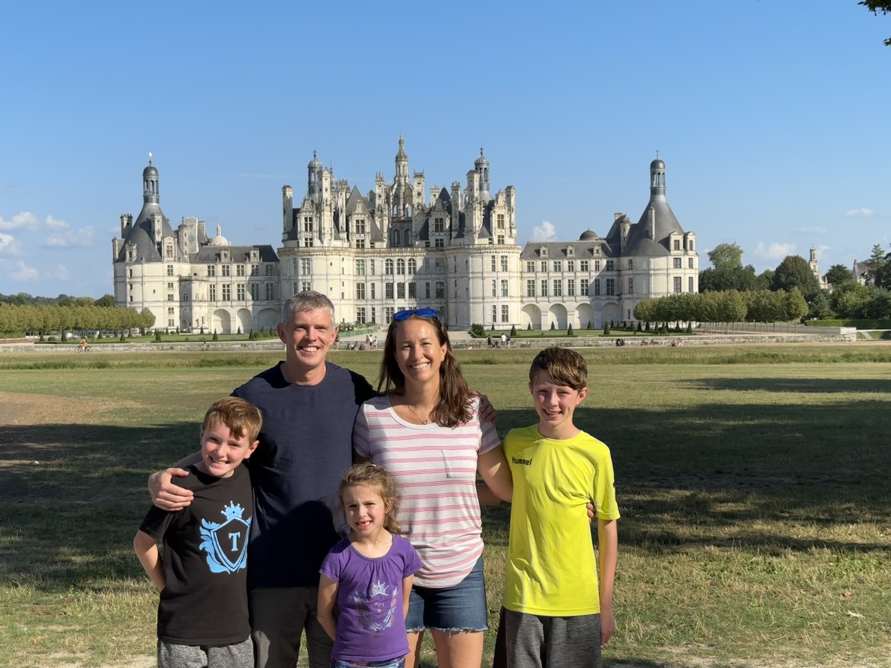

Ryan Looney
Staff Content Designer | AI & Product Systems
I'm currently an IC6 Content Designer at Meta, focused on AI adoption and integration, Instagram monetization, and large-scale product systems. I find opportunities that nobody noticed yet, and love to build the case for why they matter.
The ad label nobody had touched in 20 years
How I changed Meta's global ad label from "Sponsored" to "Ad", unlocking design and revenue opportunities at scale.
The unowned content on millions of Meta ads
I found an untested CTA on billions of Meta ads. Then ran 1,000+ variants to fix it.
System prompts are content design
How I proved content design belongs inside the AI, then built the playbook to multiply that impact across Meta.
Shaping the Future of Content and Product Design
I help teams use AI to scale the impact of content design. My work includes developing practices like system prompt writing, mentoring designers, and helping organizations navigate the opportunities and complexity of AI-driven product development.

I’m an IC6 Content Designer at Meta, where I work at the intersection of AI, monetization, and large-scale product systems. My focus is on the work most people overlook: finding the clarity and building consensus that unlocks bigger design and business opportunities.
I’ve spent three years at Meta leading content initiatives and building the content systems behind Instagram’s advertising products with billions of daily impressions. Before that, I was a VP-level content strategist at Bank of America, designing conversational AI experiences for one of the most popular virtual assistants in the country.
My recently added background in anthropology gives me a different lens on product work. I think about how language shapes behavior, how systems create culture, and why the words we choose in products at this scale are essential to success.
Outside of work, I live outside of Boston with my family and spend my free time coaching youth sports.